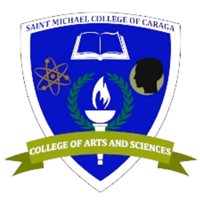
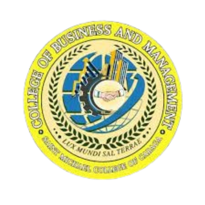
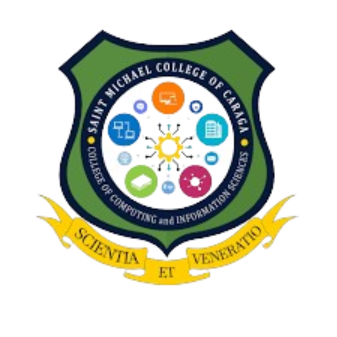
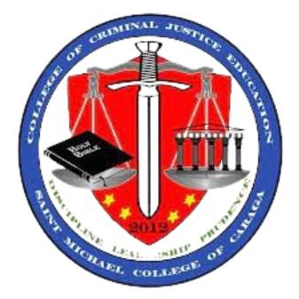
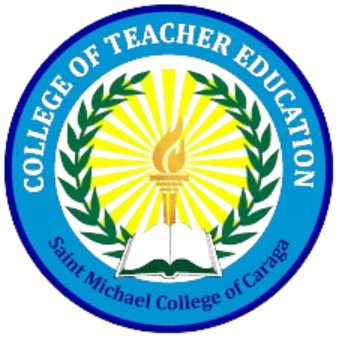
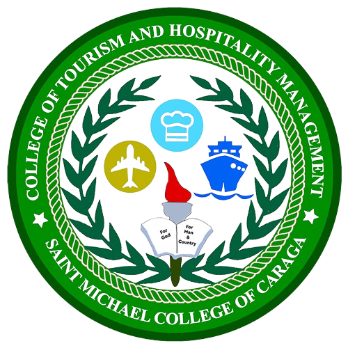

Empowering Minds, Nurturing Excellence: Welcome to Saint Michael College of Caraga, where knowledge meets inspiration, and every student is encouraged to thrive, learn, and lead with purpose.
SMCC Bigger, Better, Stronger, and Holier.
Saint Michael College of Caraga also referred to by its acronym SMCC is a private, Roman Catholic, basic education and higher education institution run by the Roman Catholic Diocese of Butuan in Nasipit, Agusan del Norte in the Philippines. It was established in 1948 by the Missionaries of the Sacred Heart (MSC) fathers. Its main campus is located at Atupan Street, Barangay 4 Poblacion, Nasipit, Agusan del Norte. The second campus is located in Brgy. Triangulo houses the elementary department.
Saint Michael College of Caraga envisions to be a university by 2035 and upholds spiritual formation and excellence in teaching, service, and research.
SMCC shall provide spiritual formation and learning culture that will ensure the students with excellent and rewarding learning experience that transform lives, abound spirituality, develop skills and prepare future leaders;
SMCC shall engage to dynamic, innovative, and interdisciplinary researches that are publishable to advance and achieve institutional initiatives; and
SMCC shall commit to serve the diverse and local communities in fostering innovations through service-learning that enhances reciprocal community partnerships for spiritual and social development.
Uphold Culture of Excellence in the Areas of Spiritual Formation, Instruction, Research, and Extension, thus Produce Graduates that are Globally Competent, Spiritually Embodied, and Socially Responsible.
Secured by Saint Michael the Archangel’s Sword of Bravery and Victory, nourished by the faithful acceptance and practice of the Christian teachings and guidance of the Catholic church, animated by MARY’s maternal devotion and intercession, guided by the gospel values, empowered by Christ’s life and examples - the Michaelinians of today and tomorrow are persons who are:
S – ocially Responsible for the respect, care, love and development of God’s creations as such at all times demonstrate and live-out their social responsibilities;
M – issionaries of Christian Values, possessing a faith that is dynamic to imbibe and to proclaim and promote the Christian values, hence, sharing in the mission of Christ and of the Catholic church to make all people members of one sheepfold of God;
C – ommitted Indivuduals and/or Leaders, likened to the faithful commitment of Jesus to His Father, thus, upholding unconditional commitment to value-filled life and actions of love and mercy;
C – ompetent in their Chosen Field of Endeavors, performing with in-depth confidence as they exude in competence in the performance of their chosen field of endeavors.
Therefore, Michaelinians have the identities of Social Responsibility, Missionaries of Christian Values, Committed Individuals and/or Leaders, and Competent in their Chosen Field of Endeavors, which are paramount to transform people to be person-oriented, persons of values, persons of faith and love for God, and persons of love and mercy for others.
|
 |
College of Arts and Sciences |
|
 |
College of Business and Management |
|
 |
College of Computing and Information Science |
|
 |
College of Criminal Justice Education |
|
 |
College of Teacher Education |
|
 |
College of Tourism and Hospitality Management |
As a general policy on admission, the school shall accept new and returning pupils/students provided they meet the following requirements: